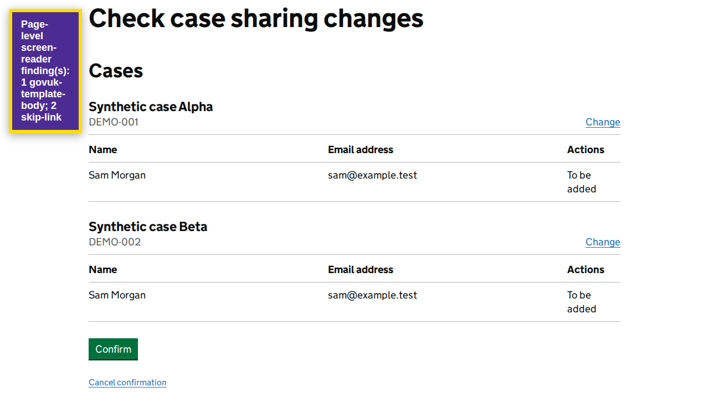

Automated heuristics support investigation; they do not replace screen-reader testing or establish WCAG conformance.
View page screenshot

1. govuk-template-body
The page should use the GOV.UK template body class during the template migration.
Selector: page
Inspect DOM snippet
2. skip-link
The page should expose a visible skip-to-main-content link.
Selector: page